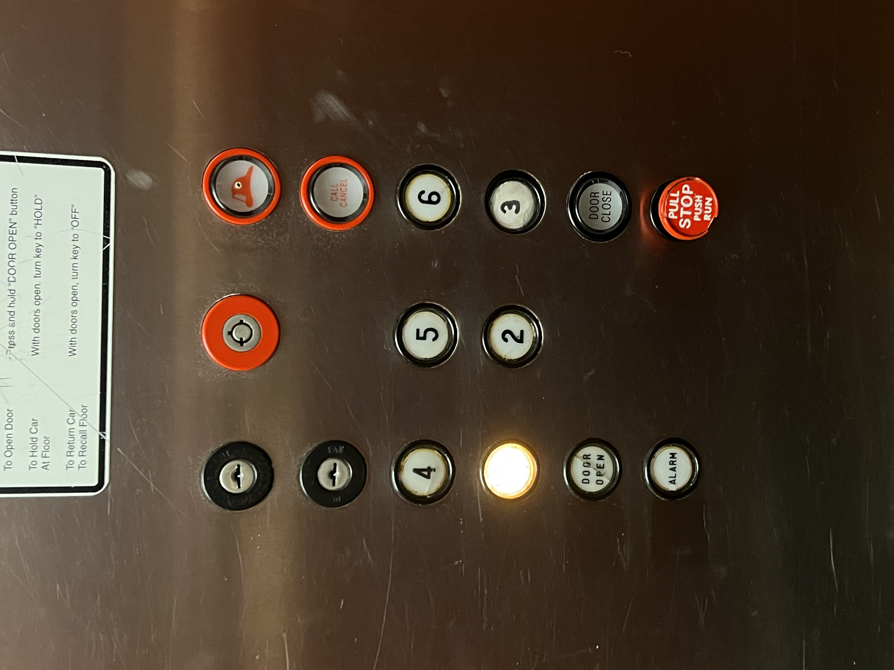
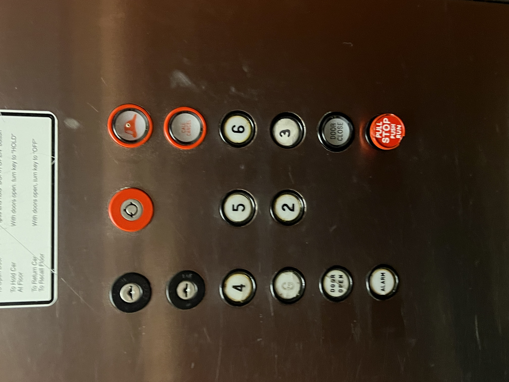
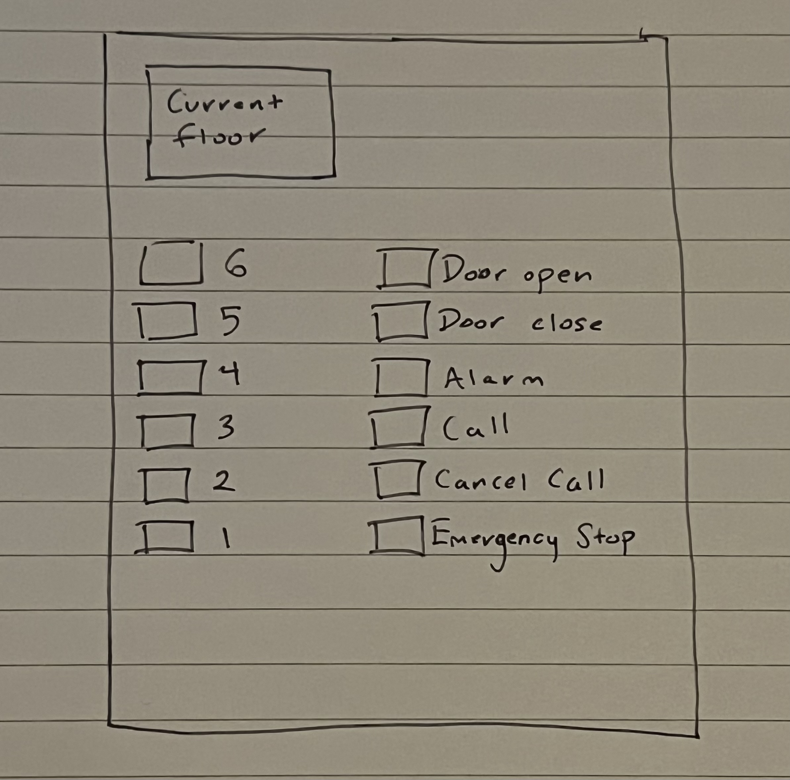
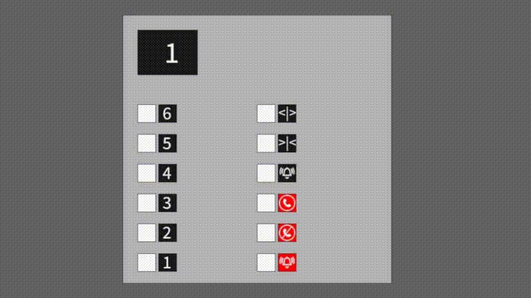

This elevator interface is one of the elevators in the MCM Eleganté Hotel
 There are many problems with this interface, the first is the fact the buttons aren't arranged vertically and when the buttons are lit, you are unable to see the floor number or what the function of the button is. Below my sketch solves these issues by removing the label from the button and putting it next to the button and reposition the floor numbers, so the higher floor is at the top of the button stack.
My sketch demostrates that I made the commonly used buttons more easy to idenitfy and easier to use. Moving the floors into a vertical orientation allows for the user to more quickly identify which button to click to go to their desired floor. The door open and door closed buttons are at the top of the panel allowing for easy use and identification.
This design allows the user to complete common actions with ease. A typical action would be to step into the elevator and click the button for the floor you wish to go to. My design allows for the user to easily identify which button to click to go to the floor they want to go to and it provides feedback after the button is clicked so the user can confirm that they selected the correct floor and their input was received. Additionally, my design only uses numbers and symbols so whether or not the user understands English, the panel is able to be used easily.